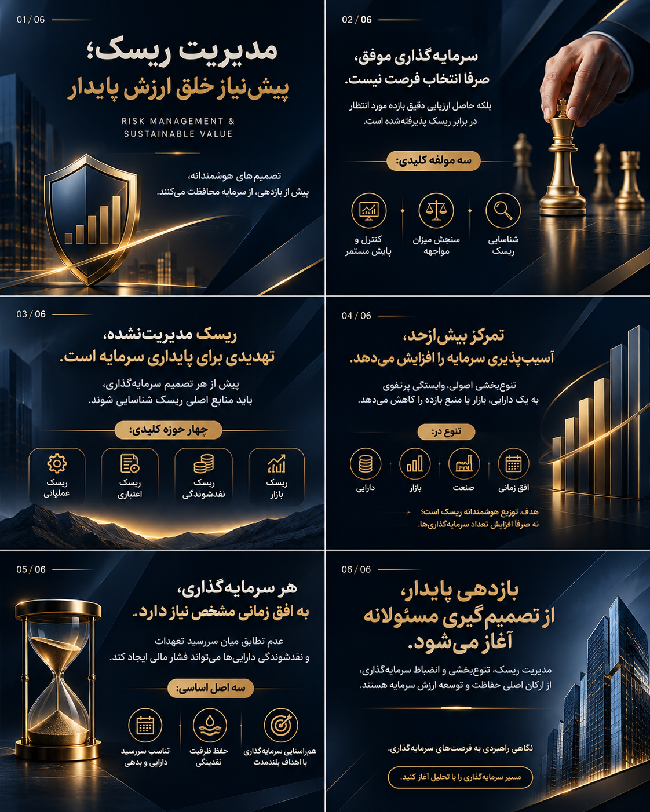
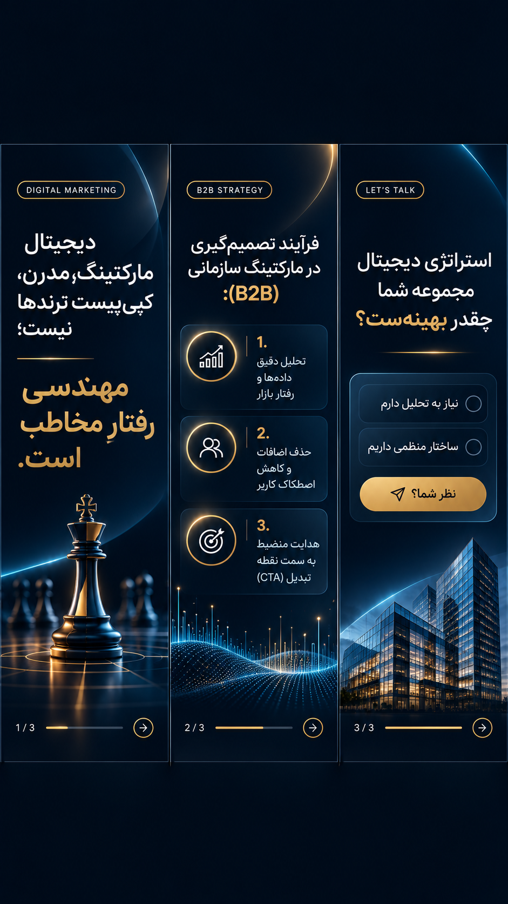

من ۲۰ ساله هستم. باور دارم ادمین اینستاگرام نباید فقط دکمه انتشار پست و استوری را بزند؛ ادمین باید دغدغهی رشد پیج، شناخت رفتار مخاطب و ایدهپردازی داشته باشد. مسیر یادگیریام را با دورههای تخصصی، کارآموزی، آزمونها و در حال اخذ مدرک از سازمان فنیحرفهای و سرتیفیکیت از هاروارد (با نمره عالی) و کارِ فشرده زیر نظر منتورم، سرکار خانم غزاله گلچقانه، جلو بردهام.
داشتنِ سابقه کار به عنوان ادمین فروش به من یاد داده که انتهای هر استوری و پست قرار است چه فروشی یا تعاملی رقم بخورد. من زبانِ بازار و نیازِ مخاطب را میفهمم و آمادهام تا با انگیزه، دقت و ایدههای خلاقانه در کنار یک تیمِ حرفهای رشد کنم.
پروژهها و کیساستادیهای تخصصی (Case Studies)
اینجا پروژههایی را میبینید که نشان میدهد چطور از ایده تا اجرا و تعامل پیش رفتهام:
پست اسلایدی اول: معماری پورتفوی و مدیریت ریسک

متن کپشن پست:
ریسک، جزء جداییناپذیر بازارهای مالی است؛ اما تفاوت میان یک سرمایهگذاری بیهوده و یک رشد پایدار، در «نحوهی مدیریت و مهار» آن معنا پیدا میکند.
در اقتصاد مدرن، تصمیمگیریهای شتابزده و اتکا به احساسات بازار، بزرگترین تهدید برای داراییهای خرد و کلان است. رشد مالی و حفظ سرمایه در برابر تورم، نیازمند یک ساختار مهندسیشده، توزیع هوشمندانه پورتفوی و انضباط در افقهای زمانی است.
نگاه ما بر این است که مسیر سرمایهگذار باید شفاف، مبتنی بر تحلیل دادههای واقعی و همراه با پایش مستمر ریسک باشد. ما معتقدیم سرمایهگذاری امن، اتفاقی نیست؛ بلکه حاصل خرد جمعی، ارزیابی دقیق بازده مورد انتظار و تعهد به ارزشآفرینی بلندمدت است.
🔹 برای دریافت تحلیلهای تخصصی، مشاوره انحصاری و بهینهسازی سبد دارایی خود، از طریق لینک موجود در بیو یا دایرکت با کارشناسان ما در ارتباط باشید.
📋 کیساستادی پروژه (Case Study): ۱. مسئله و چالش بیزنس: مخاطب به دلیل ترس از ریسک، گارد شدیدی داشت و به سختی به محتوای مالی اعتماد میکرد.
۲. نیاز پنهان مخاطب: آرامش روانی، ثبات و دیدنِ ساختار امن.
۳. راهکار اجرایی من: طراحی پالت رنگی سرمهای و طلایی مات همراه با فضای منفی وسیع؛ حذف شلوغیهای بصری برای انتقال حس اقتدار و امنیت سازمانی.
در اکوسیستم سرمایهگذاری کلان، رشد اسمی بهمعنای خلق ثروت نیست. وقتی نرخ تورم از بازدهی اسمی پیشی میگیرد، تمرکز صرف بر سودهای اسمی، خطای استراتژیک بزرگی است که بهمرور ارزش واقعی پورتفوی را فرسایش میدهد.
یک ساختار حرفهای و نهادینهشده بر پایهی چهار ستون بنیادین بنا میشود:
۱. تخصیص استراتژیک دارایی
۲. مدیریت ریسک سیستماتیک
۳. صیانت از قدرت خرید
۴. بازتنظیم منضبط پورتفوی (Rebalancing)
🌐 برای تحلیل اختصاصی و ارتقای ساختار سبد دارایی، از طریق دایرکت با ما در ارتباط باشید.
📋 کیساستادی پروژه (Case Study): ۱. مسئله و چالش بیزنس: مطالب مالی برای مخاطب عام سنگین بود و نرخ ریزش بالا داشت.
۲. نیاز پنهان مخاطب: خروج از سردرگمی و دریافت پاسخ سریع و دستهبندیشده.
۳. راهکار اجرایی من: شکستن اطلاعات به ۴ ستون بنیادین و ساختاریافته تا کاربر در یک نگاه هسته مرکزی مطلب را بگیرد.
نمونهکار ویدیو/ریلز: تیزر سینمایی و نهادینهی مارکتینگ مالی
📋 کیساستادی پروژه (Case Study): ۱. مسئله و چالش بیزنس: توقف صفحه در حالتِ ایستا و نیاز مبرم به پویایی برای جذب مخاطب در ثانیههای اول.
۲. نیاز پنهان مخاطب: تشنهی دیدن حرکت، قدرت و جریان زنده مجموعه.
۳. راهکار اجرایی من: تدوین ریلز با ریتم روان، سینمایی و جذاب جهت شکستن یکنواختی پیج.
استوری زنجیرهای و تعاملی: مهندسی رفتار مخاطب و UX

📋 کیساستادی پروژه (Case Study): ۱. مسئله و چالش بیزنس: بازدید بالا بدون تعامل یا دایرکتِ فروش.
۲. نیاز پنهان مخاطب: تنبلی کاربر و نیاز به هدایتِ گامبهگام برای مشارکت.
۳. راهکار اجرایی من: سناریونویسی استوری ۳ بخشی (قلاب، ارائه ارزش، و نظرسنجی تعاملی) برای تبدیل مخاطب خاموش به لید فعال.
ابزارها و مهارتهای من
Instagram Management & Strategy
Content Creation & Copywriting
Adobe Photoshop & Illustrator
Adobe Premiere
Sales & Business Admin Experience
Technical & Vocational Certified (فنیحرفهای)
ارتباط مستقیم
اگر برای تیم شبکههای اجتماعی خود به ادمینی خلاق، مسئولیتپذیر و آشنا با اصول مارکتینگ نیاز دارید: